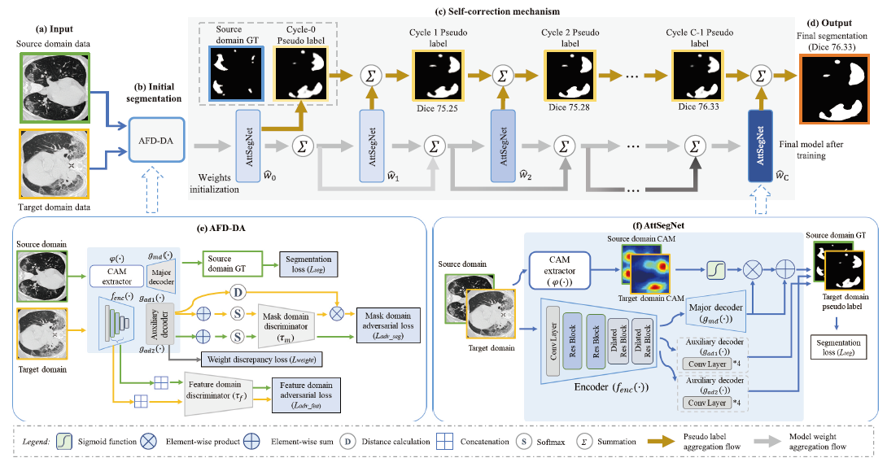
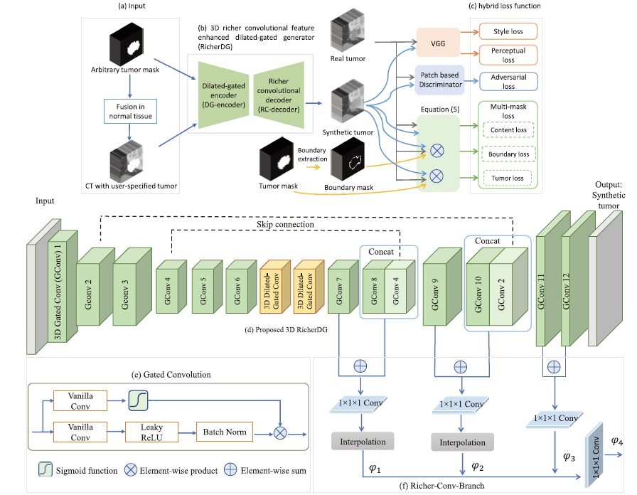
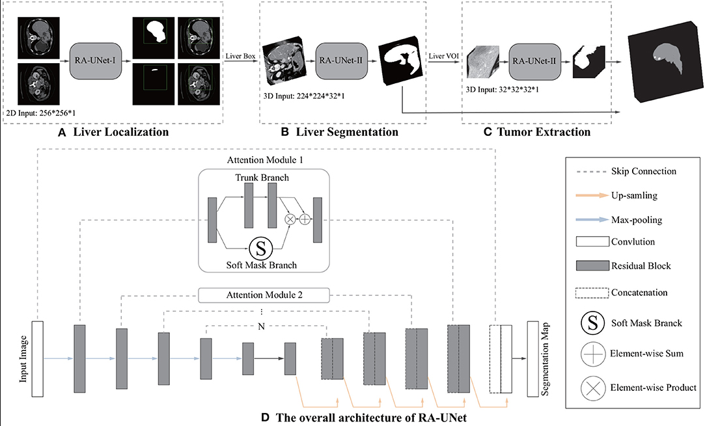
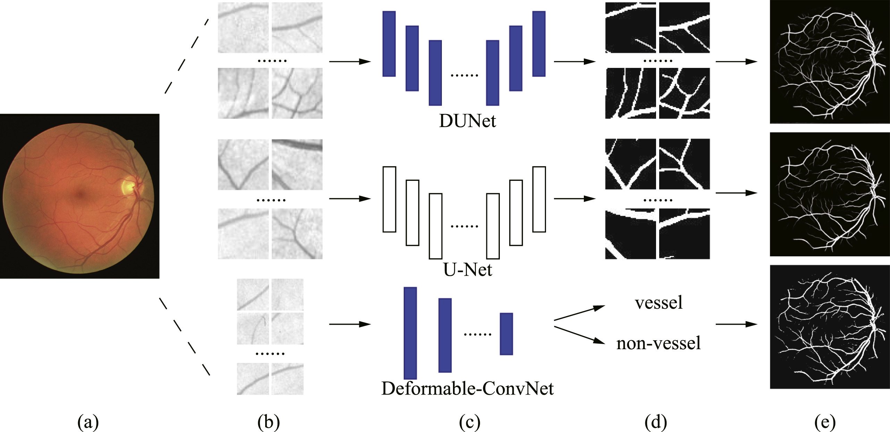
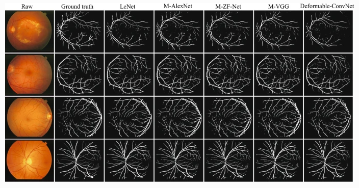
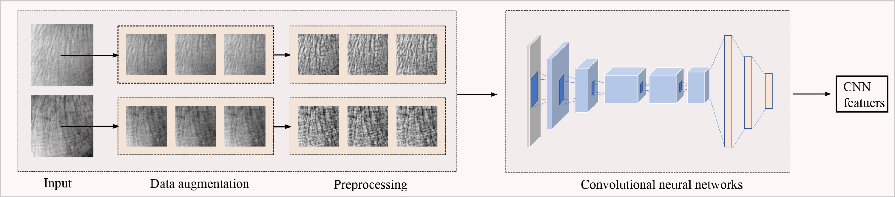
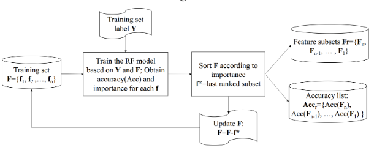
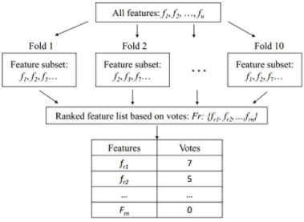

Qiangguo Jin
 |
Ph.D.,
|
![[GitHub]](pic/githubs.jpg)
![[Google]](pic/googlescholar.png)
News!
[under review] Two conference papers.
[2021/03] "Domain adaptation based self-correction model for COVID-19 infection segmentation in CT images" has been accepted by Expert Systems with Applications.
[2021/01] "Free-form tumor synthesis in computed tomography images via richer generative adversarial network" has been accepted and published on by Knowledge-Based Systems.
[2020/12] "Cascade knowledge diffusion network for skin lesion diagnosis and segmentation" has been accepted and published on Applied Soft Computing.
Bio
Qiangguo Jin is currently a PhD student in Tianjin University (TJU), China. My research lies in artificial intelligence and its applications to medical image analysis, for improving lesion detection and anatomical structure analysis. Qiangguo Jin has published papers in highly regarded journals and conferences such as KNOSYS, ASOC, ICPR, etc.
I will graduate around June 2021, and I am looking for a postdoc position in deep learning and medical image analysis! If you'd like to get in touch, feel free to send me an email. Any help is appreciated!.
Education
[2019/09 - 2021/04] Visiting Ph.D student at Data61, CSIRO, Australia. (supervised by Prof. Changming Sun)
[2017/09 - 2021/07] Ph.D. in College of Intelligence and Computing, Tianjin University. (co- supervised by Prof. Zhaopeng Meng and Prof. Ran Su)
[2014/09 - 2017/01] M.S. in School of Computer Software, Tianjin University. (supervised by Prof. Zhaopeng Meng)
[2010/09 - 2014/07] B.S. in School of Computer Software, Tianjin University. (supervised by Prof. Zhaopeng Meng)
Publication
Journal:
|  | [ESWA] |
{kind=link}
|  | [KNOSYS] |
 |
[ASOC] |
|  | [FBIOE] |
{kind=link}
|  | [KNOSYS] |
{kind=link}
|  | [NePL] |
{kind=link}
|  | [NEUCOM] |
{kind=link}
|  | [GENES] |
{kind=link}
Conference:
|  | [ICPR] |
{kind=link}
Service
I serves as a/an reviewer of:
IEEE Transactions on Neural Networks and Learning Systems (TNNLS)
IEEE Transactions on Medical Imaging (TMI)
IEEE Journal of Biomedical and Health Informatics (JBHI)
Biocybernetics and Biomedical Engineering (BBE)
International Journal of Machine Learning and Cybernetics (JMLC)
Informatics in Medicine Unlocked (IMU)
etc